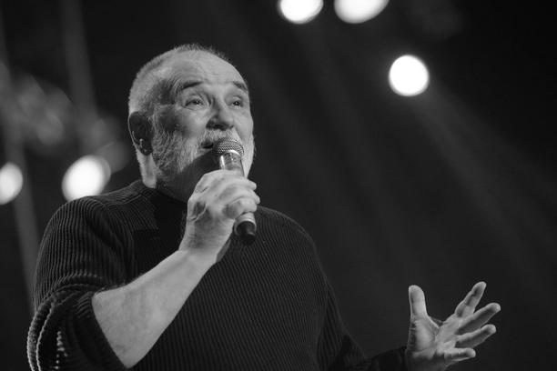

Đorđe Balašević
1953-2021
Jugoslavenski kantautor, pjesnik, pisac i glumac
Đorđe Balašević (11. maj 1953 – 19. februar 2021) bio je jugoslavenski kantautor, pjesnik, pisac i glumac.
Bio je član grupa Žetva i Rani mraz, a 1982. započeo je solističku karijeru. Ukupno je objavio 14 albuma.
Glumio je u nekoliko TV-serija, za koje je pisao i muziku.

Diskografija
S grupom Rani mraz
Mojoj mami umesto maturske slike u izlogu (1979)
Odlazi cirkus (1980)
Solo albumi
Pub (1982)
Celovečernji the Kid (1983)
003 (1985)
Bezdan (1986)
Panta rei (1988)
Tri posleratna druga (1989)
Marim ja... (1991)
Jedan od onih života... (1993)
Naposletku (1996)
Devedesete (2000)
Dnevnik starog momka (2001)
Ostaće okrugli trag na mestu šatre (2002)
Rani mraz (2004)
Singlovi
"U razdeljak te ljubim" (1977)
"Računajte na nas" (1978)
"Ljubio sam snašu na salašu" (1978)
"Oprosti mi, Katrin" (1978)
"Panonski mornar" (1979)
"Prvi januar" (1979)
"Marina" (1980)
"Priča o Vasi Ladačkom" (1980)
"Triput sam video Tita" (1981)
"Hej, čarobnjaci, svi su vam đaci" (1982)
"Poluuspavanka" (1987)"Poluuspavanka" (1987)
Domaći mediji su 19. februara 2021. godine objavili vest da je Đorđe Balašević preminuo od posledica zaraze novim virusom korona u Infektivnoj klinici Kliničkog centra Vojvodine.